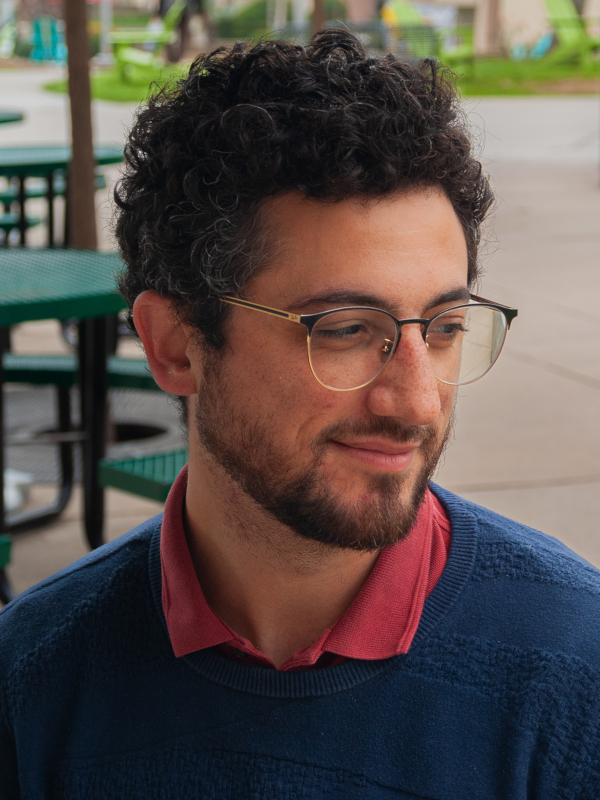

It's a website!

Manuchehr Aminian
- Applied mathematician, associate professor, freelance writer.
- Email: maminian@cpp.edu (web scrapers and bot emails welcome) Mathematics & Statistics, Cal Poly Pomona
- Github
- ORCiD
- Google Scholar
- Previously...
- Postdoc: Colorado State University, with Michael Kirby
- PhD: UNC Chapel Hill, 2016; with Rich McLaughlin and Roberto Camassa
- BS: University of Colorado Denver, 2010. Cool mentors: Andrei Knyazev, Julien Langou, Lynn Schreyer, Mike Kawai
Recent and upcoming events
Feel free to reach out if you want to meet at an upcoming event!- (Upcoming) SIAM Annual Meeting 2026, Jul 2026 (Cleveland, Ohio)
- (Upcoming) DIoDS, Feb 2026 (Harvey Mudd -- Claremont, California)
- (Upcoming) WiMSoCal 2026, Feb 2026 (Loyla Marymount -- Los Angeles, California)
- Complex Networks Winter Workshop, Dec 2025 (Quebec, Quebec)
- IAGS 2025, Oct 2025 (Johannesburg, South Africa) (link)
- SIAM Annual Meeting, Jul 2025 (Montreal, Quebec)
- Data Science in the Classroom Conference, Jul 2025 (Riverside, CA) (link)
- Dynamics Days, Jun 2025 (Thessaloniki, Greece)
- Seminar talk, Koç University, Jun 2025 (Istanbul, Türkiye)
- GSMMC/MPI, Jun 2025 (link) (Southern California)
- Applied Math in Statistics and Data Science Education (ICERM), May 2025 (Providence, RI)
- SIAM Conference on Applications of Dynamical Systems, May 2025 (Denver, CO)
- Southern California Systems Biology Symposium, May 2025 (link) (Riverside, CA)
- SoCAMS 2025, May 2025 (Riverside, CA)
Research and other activities
- Asymptotic analysis and numerical simulation with passive tracer problems (partial differential equations)
- Analysis of *omics data associated with host dynamics of infectious disease (L1 regularization; bioinformatic data wrangling)
- Analysis of time series data for within-host dynamics of infectious disease (anomaly detection; health scoring; clustering; multimodal data analysis)
- Algorithm development for applied topological data analysis (mostly interested in generators)
- Mathematical modeling, spectral/network methods, machine learning; data visualization
- Tool development associated with analysis of police activity and use of force
- Network models of synchronization; polarization
- Machine learning of differential equations from data; related constrained sparse optimization problems
- Freelance writing: mainly for SIAM News. See my profile there.
Teaching
I typically teach:- Programming for computational mathematics
- Linear algebra
- Differential equations
- Numerical analysis
- Mathematical modeling
I also have a small thing for integrating historical documents to enrich my teaching and students' learning.